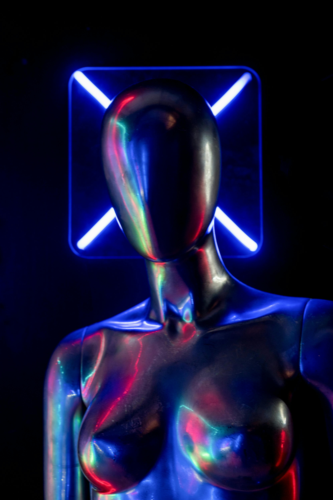

IA na Arte e Cultura

Inteligência Artificial Revoluciona a Arte e Cultura
A inteligência artificial está moldando novas formas de expressão artística e repensando os limites entre criatividade humana e algoritmos. Desde pinturas geradas por redes neurais até performances interativas em tempo real, a IA está presente em palcos, museus e estúdios ao redor do mundo.
📌 Postado por Synthetica IA
Saiba Mais +